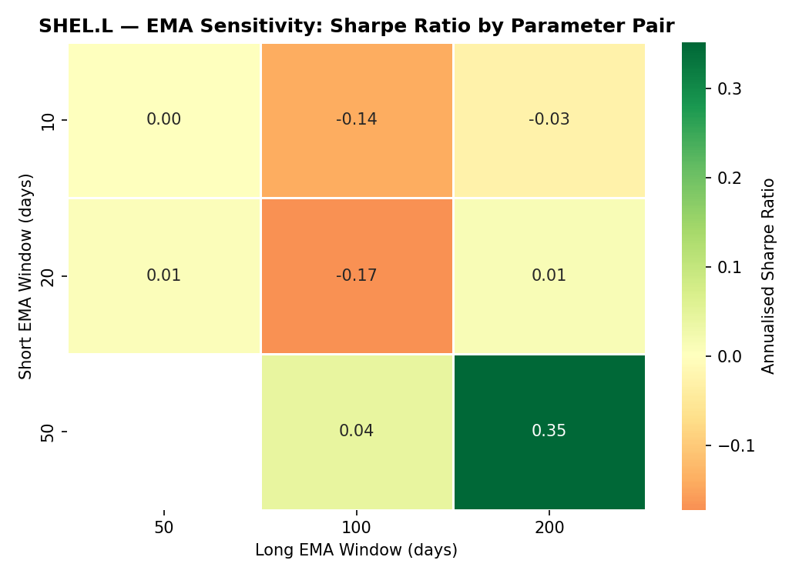
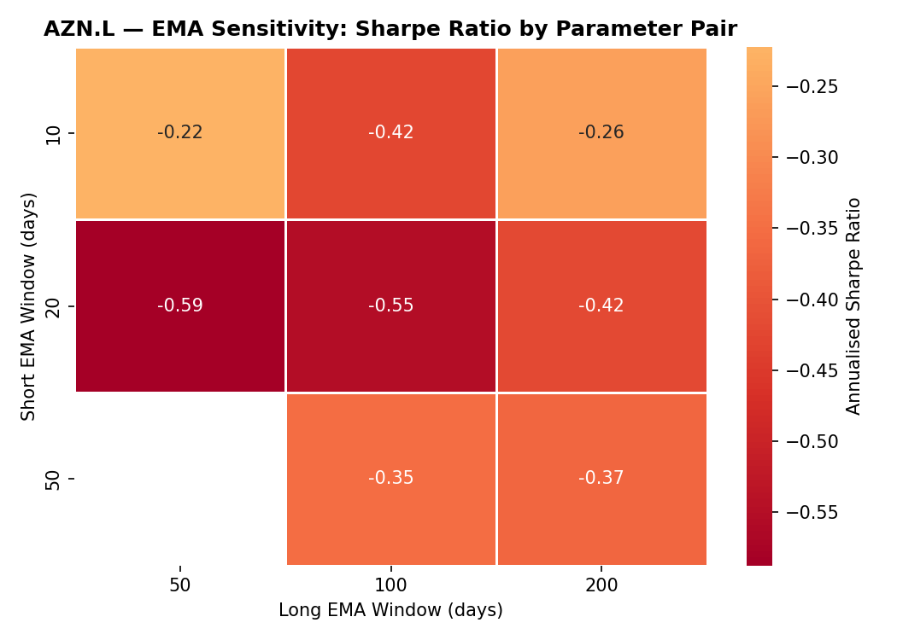
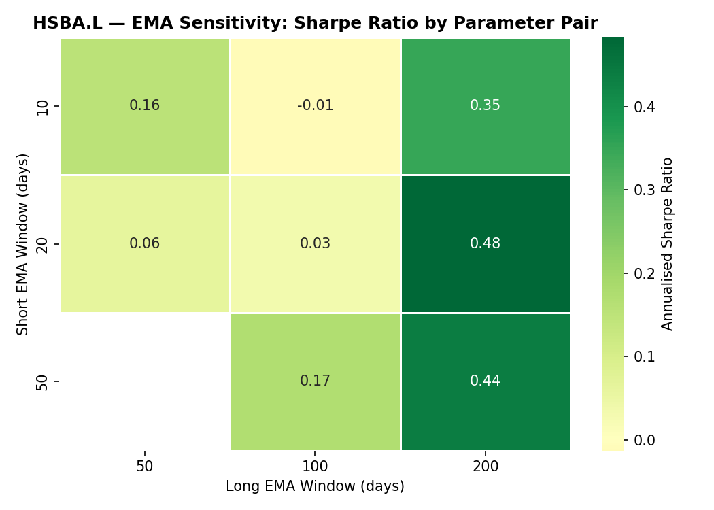
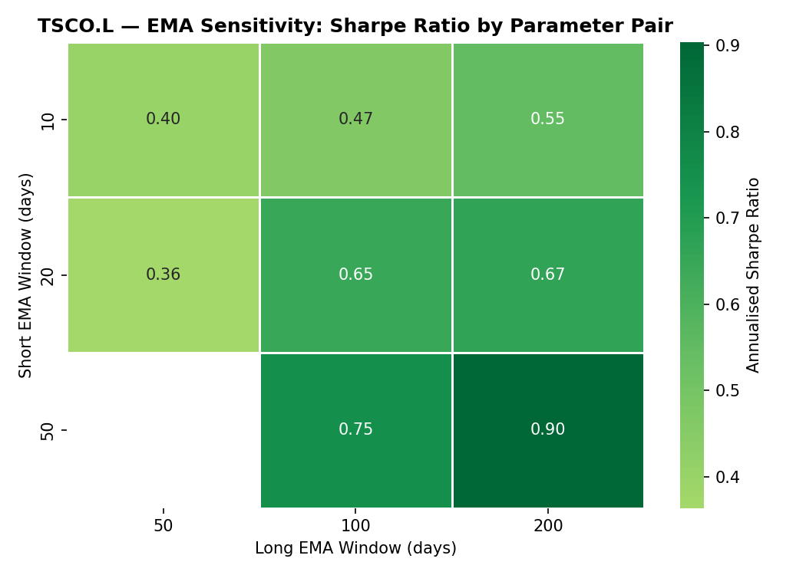
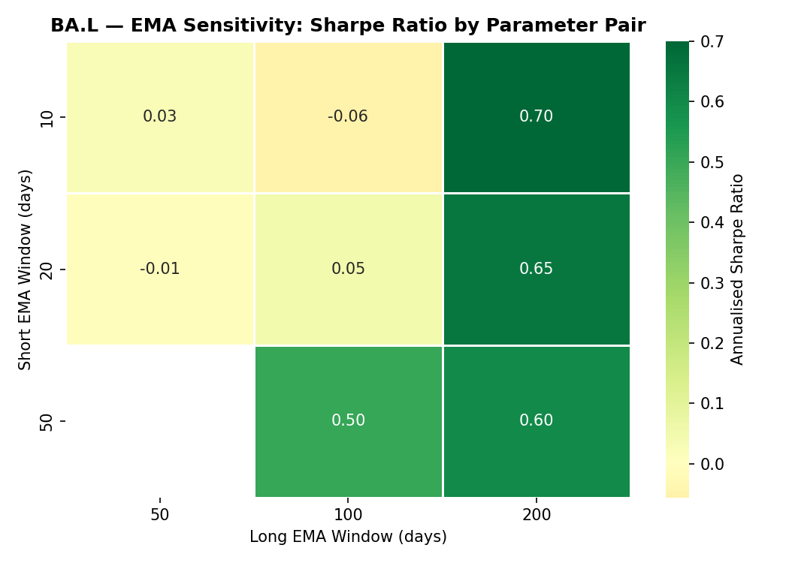

Section 5
Sensitivity analysis
A single good result at 20/50 could be luck. To test robustness, the strategy is re-run for every valid combination of fast EMA window {10, 20, 50} against slow EMA window {50, 100, 200} — six valid pairs in total (pairs where the fast window is not strictly shorter than the slow window are excluded). Each cell of the heatmaps below is the annualised Sharpe ratio for that parameter pair, on the same out-of-sample test period; green is strong, red is weak.
5.1Best parameters per stock
For each stock, the parameter pair with the highest test-period Sharpe ratio is shown alongside the canonical 20/50 pair used in the main study. The gap between the two columns is itself informative: a large gap means the 20/50 choice was far from optimal in hindsight.
| Stock | Best (short / long) | Best Sharpe | 20 / 50 Sharpe |
|---|---|---|---|
| Shell (SHEL.L) | 50 / 200 | +0.35 | +0.01 |
| AstraZeneca (AZN.L) | 10 / 50 | −0.22 | −0.59 |
| HSBC (HSBA.L) | 20 / 200 | +0.48 | +0.06 |
| Tesco (TSCO.L) | 50 / 200 | +0.90 | +0.36 |
| BAE Systems (BA.L) | 10 / 200 | +0.70 | −0.01 |
Two patterns stand out. First, no single parameter pair is best across all stocks — the optimum clusters around the slowest windows (50/200 for Shell and Tesco, 20/200 for HSBC, 10/200 for BAE) but flips to the fastest pair (10/50) for AstraZeneca. Second, the canonical 20/50 pair is never the best and is often badly sub-optimal: Shell improves from +0.01 to +0.35, HSBC from +0.06 to +0.48, and BAE from −0.01 all the way to +0.70 once slower windows are used. A rule whose Sharpe ratio swings this much with its parameters is sensitive, not robust — and the fact that the optimum almost always lies at the edge of the tested grid (the slowest available lines) hints that the trend signal adds little beyond simply staying invested.
5.2Parameter heatmaps
Rows are the short (fast) EMA window; columns are the long (slow) EMA window. Cells for invalid combinations are left blank.




